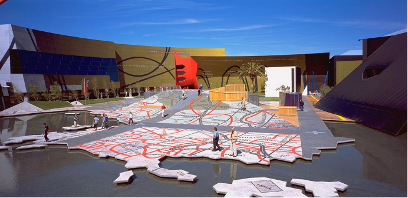
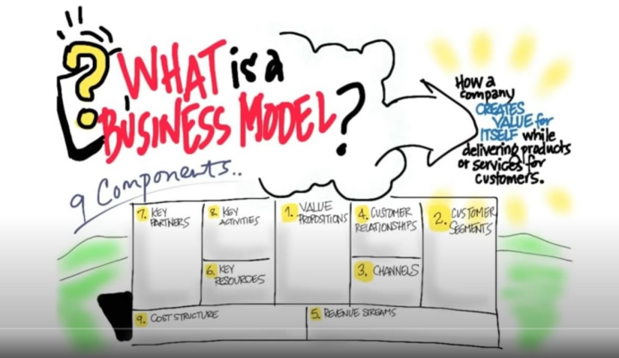
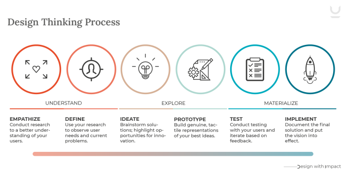

WEEK1
设计不仅仅是美学和一些物品，它包含很多东西。设计是根本，它可以将想法变成形式。人们通常把设计和美学挂钩，因为说起设计人们第一时间想到的不是设计可以用来解决问题，而是设计能带来很多美的事物，所以人们常常忽略了它解决问题的这一面。在这节课的学习中我意识到设计能给我们生活带来许多便利。它能修正许多不完美的事物。比如在我身边触手可得的手机支架，如果没有它，我们没法在用手机的同时解放我们的双手去做别的事情，手机支架这个设计的出现极大的便利了我们的生活。当我需要录制视频但又必须用双手做其他事时，手机支架就能代替我的手来帮助我进行视频的录制。
Design is more than aesthetics and objects. It encompasses many things. Design is fundamental. It can turn ideas into form. People usually associate design with aesthetics, because when it comes to design, the first thing that comes to people's mind is not that design can be used to solve problems, but that design can bring a lot of beautiful things, so people often ignore its problem-solving aspect. In this class, I realized that design can bring a lot of convenience to our life. It corrects a lot of things that aren't perfect. For example, the mobile phone bracket is at my fingertips. Without it, we can't free our hands to do other things while using the mobile phone. The appearance of the mobile phone bracket has greatly facilitated our life. When I need to record a video but need to use my hands to do other things, the phone holder can replace my hands to help me record the video.
Foundation Capital. (2017) Design Is. From: https://www.youtube.com/watch?v=MS8p-CgTJIg
https://www.strate.education/gallery/news/design-definition
WEEK2
这节课主要讲述了职业规划。也是这个学期第一个assignment的任务。在我以前从来没有思考过以后会从事什么工作，因为还在上学，觉得工作还是一件遥不可及的事。我也从来没有意识到职业规划的重要性。在这节课上，我对于我的目标填写了一个简易的表格，其中包括了我的目标是什么，怎么达成目标，最重要的是什么等等。把目标和过程写下来更加有助于我去实现它，因为记录更能给我带来动力。
这节课还讲了一些东西关于思维导图和头脑风暴，这能让我们的思路变得更加清晰。在我进行一件事的途中，我常常会没有头绪。但是一张思维导图能够帮助我记下任何我想到的东西，对我后续的进展能够提供很大的帮助。
This lesson focuses on career planning. It is also the assignment of the first assignment of this semester. I had never thought about what kind of work I would be engaged in before, because I was still in school and felt that work was still out of reach. I also never realized the importance of career planning. In this class, I filled in a simple form for my goal, including what my goal is, how to achieve it, what is the most important and so on. Writing goals and processes down helps me achieve them more, because writing them down gives me more motivation.
The lecture also talks a little bit about mind mapping and brainstorming, which can make our thinking clearer. When I'm in the middle of something, I often get lost. But a mind map helps me write down everything that comes to my mind, which is a great help in my progress.
https://www.youtube.com/watch?v=a6g8y3EDHkw
WEEK3
在工作中给予和接受批评的艺术与科学 (fastcompany.com)
这周继续讲了关于职业规划和博客。还有关于接受批评性意见的文章和关于networks的视频。从中我意识到关于How to build a successful career?首先，他人提出的批评性建议我们要虚心接受，这样才能从中提升自己。其次我们还需要花费时间去锻炼自身的技能。并且尝试去做一些练习。最后还可以参加一些活动，多于他人交流，来提高network。并且在这周我知道了许多关于设计的术语，让我了解到设计的专业性，并使我对设计的了解更进一步。
对于我自身来说，我认为在建造一个成功的职业生涯中，我最需要提升的就是自己的勇气去面对他人的批评。对于批评的恐惧通常会使我做不好那件事。虽然人总是喜欢听取别人的表扬，但批评比表扬更加重要，它可以帮助我们意识到自己的不足。所以我要正视他人的批评，来提高自身。
This week continues with talk about career planning and blogging. There are also articles about accepting critical feedback and videos about Networks. From this I realized that How to build a successful career? First of all, we should accept others' critical suggestions with an open mind so that we can improve ourselves from them. Secondly, we also need to spend time to practice our skills. And try to do some exercises. Finally, you can also participate in some activities and communicate with others to improve your network. And this week I know a lot of terms about design, let me understand the professional design, and make me further understanding of design.
For myself, I think the most important thing I need to improve in building a successful career is my courage to face criticism from others. Fear of criticism usually prevents me from doing that well. While we love to hear compliments, criticism is more important than praise and helps us realize our own shortcomings. So I have to face the criticism of others to improve myself.
WEEK4
在实地考察这个任务中我选择的是National museum of Australia.很遗憾我不能到达现场，所以我在网上搜索了它的一些照片和资料。我了解到这个建筑是由建筑师Ashton Raggatt McDougall和Robert Peck von Hartel Trethowan设计的。它避免了传统的博物馆样式，而选择采用了一种反映博物馆藏品多样性的后现代结构。建筑上运用了许多颜色，而其中最引人瞩目的就是建筑中间弯曲的构造，最开始我觉得那像是一个过山车的轨道，经过了解后我才知道那是the most visible part of the Uluru line。建筑中甚至还运用到了盲文（哪些凸起的圆形和凹陷的洞），这是我从未设想过的道路――在建筑中融入文字。
在The Garden of Australian Dreams中，设计师还融入了地图作为设计的一部分，它被当做一个休息场所，这是一种十分新奇的设计。我认为这可以帮助我在设计东西时也会想到和其他一些事物相关联的去设计一件东西。
在这节课中我还学习到了要调整自己的心态，要接受挑战和克服困难。我们应该保持积极乐观的心态，在面对问题时我总会有消极的想法，比如放弃这件事情或者只是提交一个“糟糕的成品”，但是如果我能克服这个困难，这肯定能给我带来巨大的提升，所以我应该要调整我的心态，去积极面对它们。
I chose the National Museum of Australia for field investigation. Unfortunately I couldn't get to the scene, so I searched some photos and information of it on the Internet. I learned that the building was designed by the architects Ashton Raggatt McDougall and Robert Peck von Hartel Trethowan. It eschews the traditional museum style in favor of a postmodern structure that reflects the diversity of the museum's collections. Many colors are used in the building, among which the most eye-catching is the curved structure in the middle of the building. At first, I thought it was like the track of a roller coaster, but after understanding it, I realized that it was the most visible part of the Uluru line. There was even braille (the raised circles and sunken holes), something I would never have imagined for a road -- putting words into the building.
In The Garden of Australian Dreams, The designer also included a map as part of The design, which is used as a resting place, which is a very novel design. I think it can help me to design something related to other things when I design something.
In this class, I also learned to adjust their own mentality, to accept challenges and overcome difficulties. We should keep positive and optimistic attitude, when faced with a problem I always have negative thoughts, such as to give up this thing or just submit a "bad product", but if I can overcome this difficulty, it is sure to bring me huge ascension, so I should adjust my state of mind, to actively to face them.

WEEK5
这周是第一个Assessment提交的一周。我以后最想做的职业是服装设计师，所以在这个assessment中我就写了这个主题，在写这个assessment时，最占时间的是收集资料，我查找了好多资料，但最终运用的却只有几个。不得不说我对于未来的职业还是非常迷茫的，并且我的知识储备还远远不够支撑我成功地进入我喜欢的行业，在写这个assessment时我也会遇到一些知识上面的困难。所以我认为去思考以后的职业规划是十分有必要的，这能让我对未来有一个明确的目标。
我还查看了工作与生活平衡的文章。我了解到平衡生活与工作时间的重要性，这可以减轻压力，对我们身体健康也有好处。
This week is the first Assessment submission week. I want to be a fashion designer most in the future, so I wrote this topic in this assessment. When writing this assessment, I spent the most time collecting materials. I searched a lot of materials, but only used a few in the end. I have to say that I am still very confused about my future career, and my knowledge reserve is far from enough to support me to successfully enter my favorite industry. I will also encounter some difficulties in knowledge when writing this assessment. Therefore, I think it is necessary to think about my future career planning, which can make me have a clear goal for the future.
I also looked at articles on work-life balance. I learned the importance of balance between work and life. It can reduce stress and is good for our health.
工作与生活的平衡 - 策略和从哪里获得帮助|健康直接 (healthdirect.gov.au)
WEEK6
这周主要讲了设计创业，我了解到创业的核心就是客户和价值，还有我们的创意和设计思维。在创业中首先要了解我们的价值主张，去了解潜在客户。在一个视频中我了解到时间不是衡量一件作品好坏的标准，我们需要在较短时间设计出更好的作品才是值得我们去追求的。我们还需要在生产设计产品时去提升自身价值。除此之外我们还要考虑销售商品的渠道等等，不得不说创业是一项非常艰巨的任务。
This week, I mainly talked about design entrepreneurship, and I learned that the core of entrepreneurship is customers and values, as well as our creativity and design thinking. The first step in starting a business is to understand our value proposition, to understand our potential customers. In a video, I learned that time is not the standard to measure the quality of a work, we need to design a better work in a short time is worthy of our pursuit. We also need to increase our value when we produce and design products. In addition, we also have to consider the channels to sell goods and so on. I have to say that starting a business is a very difficult task.
Pricing Design (canberra.edu.au)
Design and innovation tool: the Business Model Canvas, how does it work? (e.g. LEGO) - YouTube
The Business Model Canvas - 9 Steps to Creating a Successful Business Model - Startup Tips - YouTube

WEEK7
这周讲述了设计思维。在学习之前，我以为“设计思维”和创意有关，但在学习之后我了解到它更偏向于是一种创新探索，提出问题并解决问题。只有去思考提出不同见解，才能使使一件作品变得更加完美。我在设计一样东西的时候很少会去反思，去思考一些其他的方案，我认为这是不对的。我应该去思考并且付出行动，去实践这些有创意的想法，我认为这会给我带来一些新的认知。
This week is about design thinking. Before learning, I thought "design thinking" was related to creativity, but after learning, I learned that it is more about innovative exploration, asking questions and solving problems. Only by thinking and putting forward different opinions can we make a work more perfect. When I design something, I seldom reflect on it and think about other schemes, which I think is wrong. I should think and act, and practice these creative ideas, which I think will bring me some new insights.

https://www.deanizod.com/portfolio/design-thinking-process/
WEEK8
在关于Chris 的问答中，我听到他对于设计职业的见解，他主要回答了一些关于毕业之后找工作和刚入职时的问题。关于他对社交媒体的见解使我认识到以后找工作可以建立社交媒体提高知名度，也可以和公司发送邮件介绍自己的特长。在工作时最重要的还要富有想象力和同理心。我意识到除了上课学习的内容，我们还要融入自己的创造力在其中。还要运用设计思维，以用户为中心，去观察和发现理解大众人群需要什么。Chris说对于AI技术的兴起，这是一个很好的工具来帮助设计师，所以我们还可以借助AI技术来帮助我们提高我们的设计。除此之外还要热爱自己的工作，把设计当做感兴趣的事情做。
In the questions and answers about Chris, I heard his opinions on the design career. He mainly answered some questions about finding a job after graduation and just entering the job. His opinions on social media make me realize that I can establish social media to improve my popularity in the future job hunting, and I can also send emails to introduce my own expertise to the company. It's also important to be imaginative and empathetic at work. I realized that in addition to what we learn in class, we also need to incorporate our own creativity into it. Also use design thinking, put the user at the center to observe and discover and understand what the masses want. Chris said that with the rise of AI technology, this is a great tool to help designers, so we can also use AI technology to help us improve our design. In addition to love their work, design as an interesting thing to do.
WEEK9
这周的主题关于社区设计，在观看了关于Craft ACT的视频之后，
WEEK 11
It's holiday week! Yeah!